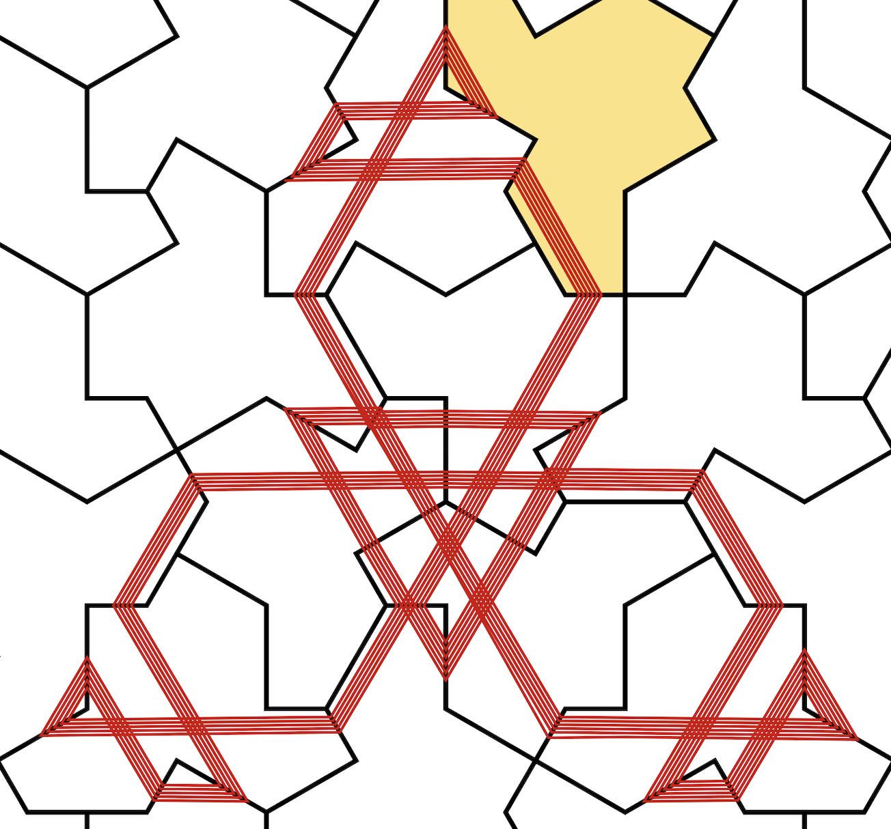

Dynamics of Tiling Billiards on Aperiodic Hat Tilings

Abstract
We study tiling billiards on hierarchical aperiodic tilings by the hat monotile. Using computational experiments, we observe substantial geometric organization in trajectories, including three direction-dependent visual styles, recurring local motifs, spatial clustering, extensive path reversal, and abundant seemingly periodic behavior. In particular, we conjecture that every nonsingular trajectory in one distinguished class of hat-edge directions is periodic.
The apparent prevalence of periodicity parallels preliminary observations previously reported for Penrose tiling billiards and suggests that strong recurrence may be a broader feature of billiards on aperiodic tilings. We also study the symbolic dynamics obtained by recording successive hat crossings. We prove that the global language complexity of nonsingular trajectories grows at most quintically, and hence that the associated global symbolic system has topological entropy zero. We conjecture that this bound can be substantially improved and that the language complexity of every individual nonsingular trajectory grows linearly.
Resources
Manuscript: PDF
Paper BibTeX: paper_citation.bib
Simulation repository: GitHub repository
How to Cite
Paper:
Aidan Perry, Dynamics of Tiling Billiards on Aperiodic Hat Tilings, manuscript, 2026. Available at the project website .
@unpublished{Perry2026DynamicsOfTilingBilliards,
author = {Perry, Aidan},
title = {Dynamics of Tiling Billiards on Aperiodic Hat Tilings},
year = {2026},
note = {Manuscript},
url = {https://aidan-perry.github.io/Hat-tiling-billiards-simulation/}
}Code:
If you use the simulation software, please cite the repository using the citation information provided in GitHub’s Cite this repository panel.